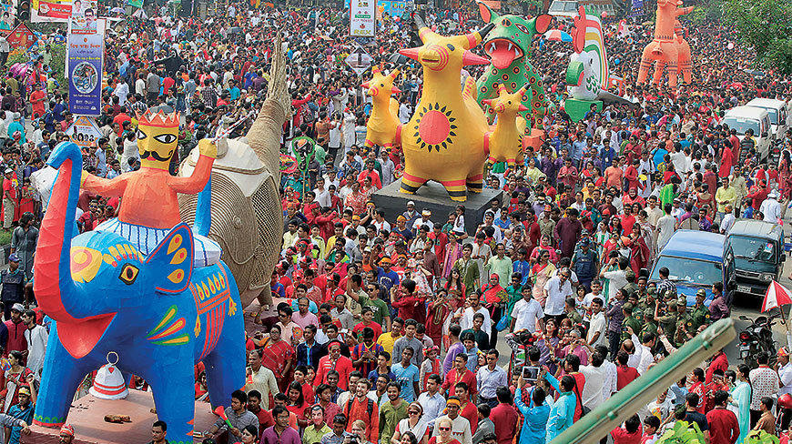
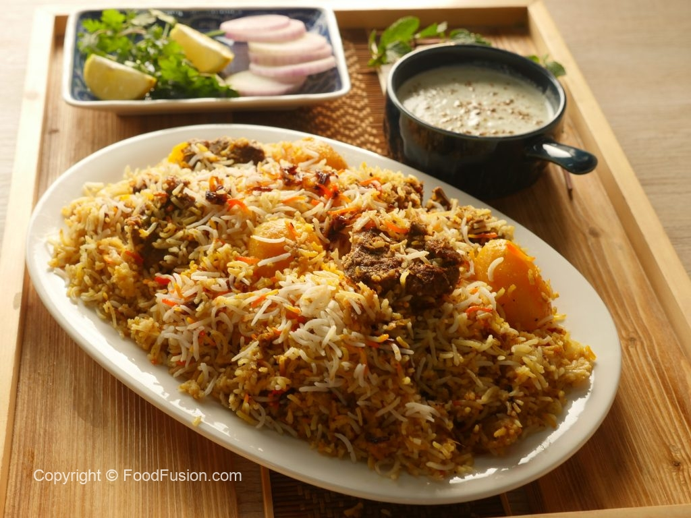

pahela baishakh Celebration
About:
Pahela Baishakh or Bangla Noboborsho is the first day of Bengali Calendar. It is celebrated on 14 April as a national holiday in Bangladesh, and on 14 or 15 April in the Indian states of West Bengal, Tripura and parts of Assam by people of Bengali heritage, irrespective of their religious faith.
Date: Tuesday, April 14, 2020
Also called: Nabobarsho
Traditonal Food

Kacchi Biriyani
About:
Kachchi Biryani is a traditional Bengali Recipe made with mutton and an array of flavorful seasonings. Travel the world in your kitchen
PREP TIME: 1 hour
COOK TIME: 3 hour
Cuisine: Bangladeshi